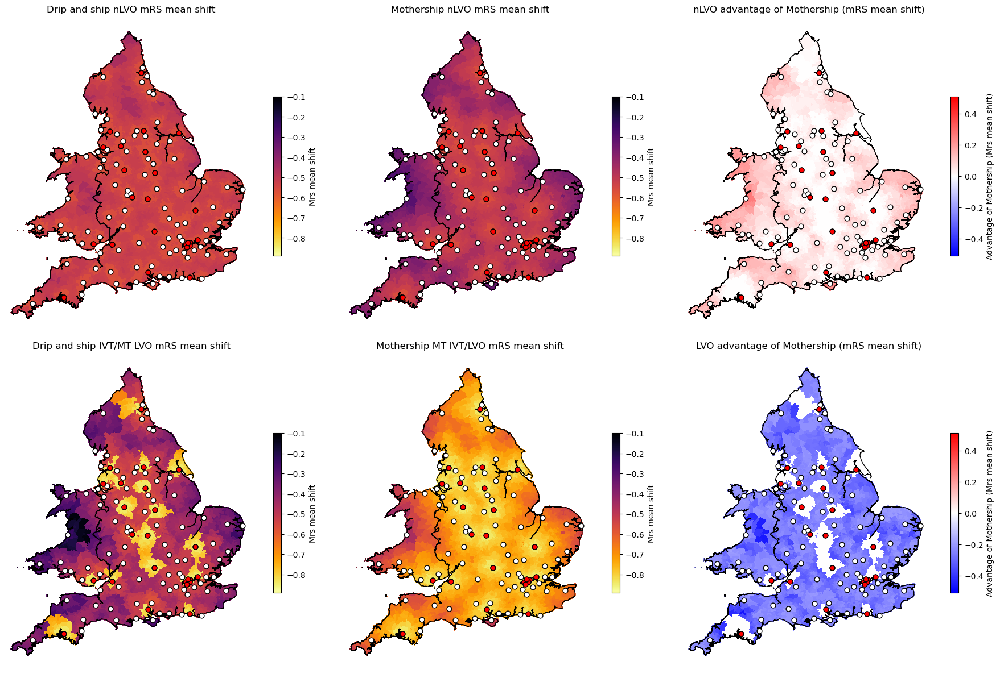
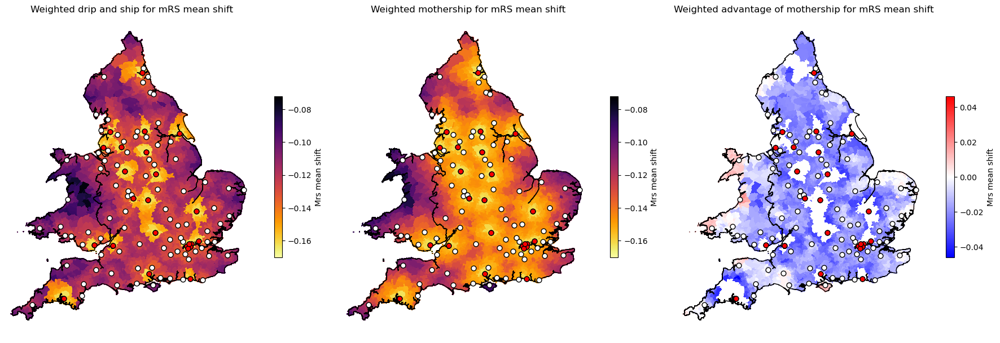

Analysis of LSOA results: mRS mean shift#
file_name = 'lsoa_base'
limit_to_england = False
data_field = 'mean_shift'
data_name = 'mRS mean shift'
Proportions of stroke types: Analysis of SAMueL data#
Data from SAMueL using NIHSS 11+ as a surrogate for LVO:
Admission type |
All arrivals |
Arrival within 6 hrs known onset |
Arrival within 4 hrs known onset |
|---|---|---|---|
Proportion all admissions |
100 |
42.9 |
37.1 |
Proportion haemorrhagic |
11.5 |
13.6 |
14.1 |
Proportion ischaemic |
88.5 |
86.4 |
85.9 |
Proportion ischaemic with NIHSS 0-10 |
74.9 |
67.4 |
65.7 |
Proportion ischaemic with NIHSS 11+ |
25.1 |
32.6 |
34.3 |
For original analysis see: https://samuel-book.github.io/samuel-1/descriptive_stats/10_using_nihss_10_for_lvo.html
Import packages#
import contextily as ctx
import geopandas
import matplotlib.pyplot as plt
import numpy as np
import pandas as pd
import os
pd.set_option('display.max_rows', 150)
Load data#
Load shape file#
filename = "zip://./data/Lower_layer_super_output_areas_(E+W)_2011_Boundaries_(Generalised_Clipped)_V2.zip"
lsoa_gdf = geopandas.read_file(filename, crs='EPSG:27700')
lsoa_gdf.head()
| LSOA11CD | LSOA11NM | LSOA11NMW | geometry | |
|---|---|---|---|---|
| 0 | E01000001 | City of London 001A | City of London 001A | POLYGON ((532105.092 182011.230, 532162.491 18... |
| 1 | E01000002 | City of London 001B | City of London 001B | POLYGON ((532746.813 181786.891, 532671.688 18... |
| 2 | E01000003 | City of London 001C | City of London 001C | POLYGON ((532135.145 182198.119, 532158.250 18... |
| 3 | E01000005 | City of London 001E | City of London 001E | POLYGON ((533807.946 180767.770, 533649.063 18... |
| 4 | E01000006 | Barking and Dagenham 016A | Barking and Dagenham 016A | POLYGON ((545122.049 184314.931, 545271.917 18... |
# Load country outline
outline = geopandas.read_file('./data/Countries_(December_2022)_GB_BFC.zip')
if limit_to_england:
mask = outline['CTRY22NM'] == 'England'
outline = outline[mask]
else:
mask = (outline['CTRY22NM'] == 'England') | (outline['CTRY22NM'] == 'Wales')
outline = outline[mask]
outline
| FID | CTRY22CD | CTRY22NM | CTRY22NMW | BNG_E | BNG_N | LONG | LAT | GlobalID | SHAPE_Leng | SHAPE_Area | geometry | |
|---|---|---|---|---|---|---|---|---|---|---|---|---|
| 0 | 1 | E92000001 | England | Lloegr | 394883 | 370883 | -2.07811 | 53.23497 | {096C3540-B006-4D2D-BCDF-B3E945B80D51} | 1.358939e+07 | 1.304623e+11 | MULTIPOLYGON (((83962.840 5401.150, 83970.680 ... |
| 2 | 3 | W92000004 | Wales | Cymru | 263405 | 242881 | -3.99417 | 52.06741 | {1DFA050A-C94B-4E58-8210-DE8274C7C33E} | 3.273688e+06 | 2.078260e+10 | MULTIPOLYGON (((322081.699 165165.901, 322082.... |
Load hospital info#
hospitals_gdf = geopandas.read_file('./data/stroke_hospitals_2022.csv')
hospitals_gdf.geometry = geopandas.points_from_xy(
hospitals_gdf.Easting, hospitals_gdf.Northing)
# Set crs for geometry, using epsg4326 for lat/long
hospitals_gdf = hospitals_gdf.set_crs(epsg=27700)
if limit_to_england:
mask = hospitals_gdf['Country'] == 'England'
hospitals_gdf = hospitals_gdf[mask]
hospitals_gdf.head()
| Postcode | Hospital_name | Use_IVT | Use_MT | Use_MSU | Country | Strategic Clinical Network | Health Board / Trust | Stroke Team | SSNAP name | ... | ivt_rate | Easting | Northing | long | lat | Neuroscience | 30 England Thrombectomy Example | hospital_city | Notes | geometry | |
|---|---|---|---|---|---|---|---|---|---|---|---|---|---|---|---|---|---|---|---|---|---|
| 0 | RM70AG | RM70AG | 1 | 1 | 1 | England | London SCN | Barking | Havering and Redbridge University Hospitals N... | Queens Hospital Romford HASU | ... | 11.9 | 551118 | 187780 | 0.179030640661934 | 51.5686465521504 | 1 | 0 | Romford | POINT (551118.000 187780.000) | |
| 1 | E11BB | E11BB | 1 | 1 | 1 | England | London SCN | Barts Health NHS Trust | The Royal London Hospital | Royal London Hospital HASU | ... | 13.4 | 534829 | 181798 | -0.0581329916047372 | 51.5190178361295 | 1 | 1 | Royal London | POINT (534829.000 181798.000) | |
| 2 | SW66SX | SW66SX | 1 | 1 | 1 | England | London SCN | Imperial College Healthcare NHS Trust | Charing Cross Hospital, London | Charing Cross Hospital HASU | ... | 9.9 | 524226 | 176487 | -0.212736111308184 | 51.4737165811988 | 1 | 1 | Charing Cross | POINT (524226.000 176487.000) | |
| 3 | SE59RW | SE59RW | 1 | 1 | 1 | England | London SCN | King's College Hospital NHS Foundation Trust | King's College Hospital, London | King's College Hospital HASU | ... | 15 | 532536 | 176228 | -0.0932514945350423 | 51.4695052907757 | 1 | 0 | Kings College | POINT (532536.000 176228.000) | |
| 4 | BR68ND | BR68ND | 1 | 0 | 0 | England | London SCN | King's College Hospital NHS Foundation Trust | Princess Royal University Hospital | Princess Royal University Hospital HASU | ... | 13.3 | 543443 | 165032 | 0.0591464390000555 | 51.3662434074157 | 0 | 0 | Princess Royal | POINT (543443.000 165032.000) |
5 rows × 22 columns
Load LSOA model output data#
lsoa_data = pd.read_csv(f'./output/{file_name}.csv')
lsoa_data.head(3).T
| 0 | 1 | 2 | |
|---|---|---|---|
| lsoa | Adur 001A | Adur 001B | Adur 001C |
| closest_ivt_unit | BN25BE | BN25BE | BN112DH |
| closest_ivt_time | 17.6 | 18.7 | 17.6 |
| closest_mt_unit | BN25BE | BN25BE | BN25BE |
| closest_mt_time | 17.6 | 18.7 | 19.8 |
| transfer_mt_unit | BN25BE | BN25BE | BN25BE |
| transfer_mt_time | 0.0 | 0.0 | 31.6 |
| mt_transfer_required | False | False | True |
| msu_unit | BN25BE | BN25BE | BN25BE |
| msu_time | 17.6 | 18.7 | 19.8 |
| ivt_drip_ship | 117.6 | 118.7 | 117.6 |
| ivt_mothership | 117.6 | 118.7 | 119.8 |
| mt_drip_ship | 167.6 | 168.7 | 259.2 |
| mt_mothership | 167.6 | 168.7 | 169.8 |
| drip_ship_lvo_untreated_probs | [0.05 0.08 0.14 0.16 0.24 0.14 0.19] | [0.05 0.08 0.14 0.16 0.24 0.14 0.19] | [0.05 0.08 0.14 0.16 0.24 0.14 0.19] |
| drip_ship_nlvo_untreated_probs | [0.2 0.26 0.12 0.13 0.14 0.06 0.09] | [0.2 0.26 0.12 0.13 0.14 0.06 0.09] | [0.2 0.26 0.12 0.13 0.14 0.06 0.09] |
| drip_ship_lvo_ivt_probs | [0.09 0.09 0.13 0.15 0.22 0.12 0.2 ] | [0.09 0.09 0.13 0.15 0.22 0.12 0.2 ] | [0.09 0.09 0.13 0.15 0.22 0.12 0.2 ] |
| drip_ship_lvo_mt_probs | [0.18 0.12 0.14 0.17 0.18 0.09 0.12] | [0.18 0.12 0.14 0.17 0.18 0.09 0.12] | [0.13 0.11 0.14 0.17 0.2 0.1 0.15] |
| drip_ship_nlvo_ivt_probs | [0.35 0.23 0.11 0.12 0.09 0.04 0.06] | [0.35 0.23 0.11 0.12 0.09 0.04 0.06] | [0.35 0.23 0.11 0.12 0.09 0.04 0.06] |
| drip_ship_lvo_untreated_mean_utility | 0.3319 | 0.3319 | 0.3319 |
| drip_ship_nlvo_untreated_mean_utility | 0.5997 | 0.5997 | 0.5997 |
| drip_ship_lvo_ivt_mean_utility | 0.3664 | 0.3664 | 0.3664 |
| drip_ship_lvo_mt_mean_utility | 0.4962 | 0.4962 | 0.441 |
| drip_ship_nlvo_ivt_mean_utility | 0.6997 | 0.6997 | 0.6997 |
| drip_ship_lvo_ivt_added_utility | 0.0345 | 0.0345 | 0.0345 |
| drip_ship_lvo_mt_added_utility | 0.1643 | 0.1643 | 0.1091 |
| drip_ship_nlvo_ivt_added_utility | 0.1 | 0.1 | 0.1 |
| drip_ship_lvo_untreated_cum_probs | [0.05 0.13 0.27 0.43 0.67 0.81 1. ] | [0.05 0.13 0.27 0.43 0.67 0.81 1. ] | [0.05 0.13 0.27 0.43 0.67 0.81 1. ] |
| drip_ship_nlvo_untreated_cum_probs | [0.2 0.46 0.58 0.71 0.85 0.91 1. ] | [0.2 0.46 0.58 0.71 0.85 0.91 1. ] | [0.2 0.46 0.58 0.71 0.85 0.91 1. ] |
| drip_ship_lvo_ivt_cum_probs | [0.09 0.18 0.31 0.46 0.68 0.8 1. ] | [0.09 0.18 0.31 0.46 0.68 0.8 1. ] | [0.09 0.18 0.31 0.46 0.68 0.8 1. ] |
| drip_ship_lvo_mt_cum_probs | [0.18 0.3 0.44 0.61 0.79 0.88 1. ] | [0.18 0.3 0.44 0.61 0.79 0.88 1. ] | [0.13 0.24 0.38 0.55 0.75 0.85 1. ] |
| drip_ship_nlvo_ivt_cum_probs | [0.35 0.58 0.69 0.81 0.9 0.94 1. ] | [0.35 0.58 0.69 0.81 0.9 0.94 1. ] | [0.35 0.58 0.69 0.81 0.9 0.94 1. ] |
| drip_ship_lvo_untreated_mrs<=2 | 0.27 | 0.27 | 0.27 |
| drip_ship_nlvo_untreated_mrs<=2 | 0.58 | 0.58 | 0.58 |
| drip_ship_lvo_ivt_mrs<=2 | 0.31 | 0.31 | 0.31 |
| drip_ship_lvo_mt_mrs<=2 | 0.44 | 0.44 | 0.38 |
| drip_ship_nlvo_ivt_mrs<=2 | 0.69 | 0.69 | 0.69 |
| drip_ship_lvo_ivt_shift | [ 0.04 0.01 -0.01 -0.01 -0.02 -0.02 0.01] | [ 0.04 0.01 -0.01 -0.01 -0.02 -0.02 0.01] | [ 0.04 0.01 -0.01 -0.01 -0.02 -0.02 0.01] |
| drip_ship_lvo_mt_shift | [ 0.13 0.04 0. 0.01 -0.06 -0.05 -0.07] | [ 0.13 0.04 0. 0.01 -0.06 -0.05 -0.07] | [ 0.08 0.03 0. 0.01 -0.04 -0.04 -0.04] |
| drip_ship_nlvo_ivt_shift | [ 0.15 -0.03 -0.01 -0.01 -0.05 -0.02 -0.03] | [ 0.15 -0.03 -0.01 -0.01 -0.05 -0.02 -0.03] | [ 0.15 -0.03 -0.01 -0.01 -0.05 -0.02 -0.03] |
| drip_ship_lvo_untreated_mean_mRS | 3.64 | 3.64 | 3.64 |
| drip_ship_nlvo_untreated_mean_mRS | 2.29 | 2.29 | 2.29 |
| drip_ship_lvo_ivt_mean_mRS | 3.48 | 3.48 | 3.48 |
| drip_ship_lvo_mt_mean_mRS | 2.8 | 2.8 | 3.1 |
| drip_ship_nlvo_ivt_mean_mRS | 1.73 | 1.73 | 1.73 |
| drip_ship_lvo_ivt_mean_shift | -0.16 | -0.16 | -0.16 |
| drip_ship_lvo_mt_mean_shift | -0.84 | -0.84 | -0.54 |
| drip_ship_nlvo_ivt_mean_shift | -0.56 | -0.56 | -0.56 |
| drip_ship_lvo_ivt_improved | 0.17 | 0.17 | 0.17 |
| drip_ship_lvo_mt_improved | 0.75 | 0.75 | 0.54 |
| drip_ship_nlvo_ivt_improved | 0.56 | 0.56 | 0.56 |
| mothership_lvo_untreated_probs | [0.05 0.08 0.14 0.16 0.24 0.14 0.19] | [0.05 0.08 0.14 0.16 0.24 0.14 0.19] | [0.05 0.08 0.14 0.16 0.24 0.14 0.19] |
| mothership_nlvo_untreated_probs | [0.2 0.26 0.12 0.13 0.14 0.06 0.09] | [0.2 0.26 0.12 0.13 0.14 0.06 0.09] | [0.2 0.26 0.12 0.13 0.14 0.06 0.09] |
| mothership_lvo_ivt_probs | [0.09 0.09 0.13 0.15 0.22 0.12 0.2 ] | [0.09 0.09 0.13 0.15 0.22 0.12 0.2 ] | [0.09 0.09 0.12 0.16 0.22 0.12 0.2 ] |
| mothership_lvo_mt_probs | [0.18 0.12 0.14 0.17 0.18 0.09 0.12] | [0.18 0.12 0.14 0.17 0.18 0.09 0.12] | [0.18 0.12 0.14 0.17 0.18 0.09 0.12] |
| mothership_nlvo_ivt_probs | [0.35 0.23 0.11 0.12 0.09 0.04 0.06] | [0.35 0.23 0.11 0.12 0.09 0.04 0.06] | [0.35 0.23 0.11 0.12 0.09 0.04 0.06] |
| mothership_lvo_untreated_mean_utility | 0.3319 | 0.3319 | 0.3319 |
| mothership_nlvo_untreated_mean_utility | 0.5997 | 0.5997 | 0.5997 |
| mothership_lvo_ivt_mean_utility | 0.3664 | 0.3664 | 0.3645 |
| mothership_lvo_mt_mean_utility | 0.4962 | 0.4962 | 0.4962 |
| mothership_nlvo_ivt_mean_utility | 0.6997 | 0.6997 | 0.6997 |
| mothership_lvo_ivt_added_utility | 0.0345 | 0.0345 | 0.0326 |
| mothership_lvo_mt_added_utility | 0.1643 | 0.1643 | 0.1643 |
| mothership_nlvo_ivt_added_utility | 0.1 | 0.1 | 0.1 |
| mothership_lvo_untreated_cum_probs | [0.05 0.13 0.27 0.43 0.67 0.81 1. ] | [0.05 0.13 0.27 0.43 0.67 0.81 1. ] | [0.05 0.13 0.27 0.43 0.67 0.81 1. ] |
| mothership_nlvo_untreated_cum_probs | [0.2 0.46 0.58 0.71 0.85 0.91 1. ] | [0.2 0.46 0.58 0.71 0.85 0.91 1. ] | [0.2 0.46 0.58 0.71 0.85 0.91 1. ] |
| mothership_lvo_ivt_cum_probs | [0.09 0.18 0.31 0.46 0.68 0.8 1. ] | [0.09 0.18 0.31 0.46 0.68 0.8 1. ] | [0.09 0.18 0.3 0.46 0.68 0.8 1. ] |
| mothership_lvo_mt_cum_probs | [0.18 0.3 0.44 0.61 0.79 0.88 1. ] | [0.18 0.3 0.44 0.61 0.79 0.88 1. ] | [0.18 0.3 0.44 0.61 0.79 0.88 1. ] |
| mothership_nlvo_ivt_cum_probs | [0.35 0.58 0.69 0.81 0.9 0.94 1. ] | [0.35 0.58 0.69 0.81 0.9 0.94 1. ] | [0.35 0.58 0.69 0.81 0.9 0.94 1. ] |
| mothership_lvo_untreated_mrs<=2 | 0.27 | 0.27 | 0.27 |
| mothership_nlvo_untreated_mrs<=2 | 0.58 | 0.58 | 0.58 |
| mothership_lvo_ivt_mrs<=2 | 0.31 | 0.31 | 0.3 |
| mothership_lvo_mt_mrs<=2 | 0.44 | 0.44 | 0.44 |
| mothership_nlvo_ivt_mrs<=2 | 0.69 | 0.69 | 0.69 |
| mothership_lvo_ivt_shift | [ 0.04 0.01 -0.01 -0.01 -0.02 -0.02 0.01] | [ 0.04 0.01 -0.01 -0.01 -0.02 -0.02 0.01] | [ 0.04 0.01 -0.02 0. -0.02 -0.02 0.01] |
| mothership_lvo_mt_shift | [ 0.13 0.04 0. 0.01 -0.06 -0.05 -0.07] | [ 0.13 0.04 0. 0.01 -0.06 -0.05 -0.07] | [ 0.13 0.04 0. 0.01 -0.06 -0.05 -0.07] |
| mothership_nlvo_ivt_shift | [ 0.15 -0.03 -0.01 -0.01 -0.05 -0.02 -0.03] | [ 0.15 -0.03 -0.01 -0.01 -0.05 -0.02 -0.03] | [ 0.15 -0.03 -0.01 -0.01 -0.05 -0.02 -0.03] |
| mothership_lvo_untreated_mean_mRS | 3.64 | 3.64 | 3.64 |
| mothership_nlvo_untreated_mean_mRS | 2.29 | 2.29 | 2.29 |
| mothership_lvo_ivt_mean_mRS | 3.48 | 3.48 | 3.49 |
| mothership_lvo_mt_mean_mRS | 2.8 | 2.8 | 2.8 |
| mothership_nlvo_ivt_mean_mRS | 1.73 | 1.73 | 1.73 |
| mothership_lvo_ivt_mean_shift | -0.16 | -0.16 | -0.15 |
| mothership_lvo_mt_mean_shift | -0.84 | -0.84 | -0.84 |
| mothership_nlvo_ivt_mean_shift | -0.56 | -0.56 | -0.56 |
| mothership_lvo_ivt_improved | 0.17 | 0.17 | 0.16 |
| mothership_lvo_mt_improved | 0.75 | 0.75 | 0.75 |
| mothership_nlvo_ivt_improved | 0.56 | 0.56 | 0.56 |
| weighted_drip_ship_added_utility | 0.030863 | 0.030863 | 0.025343 |
| weighted_mothership_added_utility | 0.030863 | 0.030863 | 0.030701 |
| weighted_drip_ship_mrs<=2 | 0.1497 | 0.1497 | 0.1437 |
| weighted_mothership_mrs<=2 | 0.1497 | 0.1497 | 0.14885 |
| weighted_drip_ship_mean_shift | -0.162 | -0.162 | -0.132 |
| weighted_mothership_mean_shift | -0.162 | -0.162 | -0.16115 |
| LSOA_predicted_admissions | 2.550427 | 2.550427 | 2.550427 |
# Merge with shape file
lsoa_data_gdf = lsoa_gdf.merge(lsoa_data, left_on='LSOA11NM', right_on='lsoa', how='right')
lsoa_data_gdf.head()
| LSOA11CD | LSOA11NM | LSOA11NMW | geometry | lsoa | closest_ivt_unit | closest_ivt_time | closest_mt_unit | closest_mt_time | transfer_mt_unit | ... | mothership_lvo_ivt_improved | mothership_lvo_mt_improved | mothership_nlvo_ivt_improved | weighted_drip_ship_added_utility | weighted_mothership_added_utility | weighted_drip_ship_mrs<=2 | weighted_mothership_mrs<=2 | weighted_drip_ship_mean_shift | weighted_mothership_mean_shift | LSOA_predicted_admissions | |
|---|---|---|---|---|---|---|---|---|---|---|---|---|---|---|---|---|---|---|---|---|---|
| 0 | E01031349 | Adur 001A | Adur 001A | POLYGON ((525328.061 105725.349, 525436.843 10... | Adur 001A | BN25BE | 17.6 | BN25BE | 17.6 | BN25BE | ... | 0.17 | 0.75 | 0.56 | 0.030863 | 0.030863 | 0.1497 | 0.14970 | -0.16200 | -0.16200 | 2.550427 |
| 1 | E01031350 | Adur 001B | Adur 001B | POLYGON ((524713.079 106781.551, 524753.189 10... | Adur 001B | BN25BE | 18.7 | BN25BE | 18.7 | BN25BE | ... | 0.17 | 0.75 | 0.56 | 0.030863 | 0.030863 | 0.1497 | 0.14970 | -0.16200 | -0.16200 | 2.550427 |
| 2 | E01031351 | Adur 001C | Adur 001C | POLYGON ((523976.094 108414.594, 524038.094 10... | Adur 001C | BN112DH | 17.6 | BN25BE | 19.8 | BN25BE | ... | 0.16 | 0.75 | 0.56 | 0.025343 | 0.030701 | 0.1437 | 0.14885 | -0.13200 | -0.16115 | 2.550427 |
| 3 | E01031352 | Adur 001D | Adur 001D | POLYGON ((524263.733 106628.407, 524317.000 10... | Adur 001D | BN112DH | 17.6 | BN25BE | 19.8 | BN25BE | ... | 0.16 | 0.75 | 0.56 | 0.025343 | 0.030701 | 0.1437 | 0.14885 | -0.13200 | -0.16115 | 2.550427 |
| 4 | E01031370 | Adur 001E | Adur 001E | POLYGON ((522978.319 106148.604, 523260.859 10... | Adur 001E | BN112DH | 16.5 | BN25BE | 19.8 | BN25BE | ... | 0.16 | 0.75 | 0.56 | 0.026141 | 0.030701 | 0.1437 | 0.14885 | -0.13415 | -0.16115 | 2.550427 |
5 rows × 99 columns
Calculate difference between Mothership and Drip and Ship#
lsoa_data_gdf[f'nlvo_ivt_{data_field}_mothership_minus_dripship'] = \
lsoa_data_gdf[f'mothership_nlvo_ivt_{data_field}'] - lsoa_data_gdf[f'drip_ship_nlvo_ivt_{data_field}']
lsoa_data_gdf[f'lvo_mt_{data_field}_mothership_minus_dripship'] = \
lsoa_data_gdf[f'mothership_lvo_mt_{data_field}'] - lsoa_data_gdf[f'drip_ship_lvo_mt_{data_field}']
Plots#
fig = plt.figure(figsize=(18,12))
################### Plot data values ###################
cols = [f'drip_ship_nlvo_ivt_{data_field}',
f'mothership_nlvo_ivt_{data_field}',
f'drip_ship_lvo_mt_{data_field}',
f'mothership_lvo_mt_{data_field}']
titles = [f'Drip and ship nLVO {data_name}',
f'Mothership nLVO {data_name}',
f'Drip and ship IVT/MT LVO {data_name}',
f'Mothership MT IVT/LVO {data_name}']
# Indexes for subplots (to leave gaps on right for diff between Mothership and Drip and Ship)
indexes = [1, 2, 4, 5]
# Find maximum of data
vmin = np.min([lsoa_data_gdf[col].min() for col in cols])
vmax = np.max([lsoa_data_gdf[col].max() for col in cols])
for i in range(4):
ax = fig.add_subplot(2, 3, indexes[i])
# Plot data
lsoa_data_gdf.plot(ax=ax, # Set which axes to use for plot (only one here)
column=cols[i], # Column to apply colour
antialiased=False, # Avoids artifact boundry lines
edgecolor='face', # Make LSOA boundry same colour as area
vmin=vmin, # Manual scale min (remove to make automatic)
vmax=vmax, # Manual scale max (remove to make automatic)
cmap='inferno_r', # Colour map to use
# Adjust size of colourmap key, and add label
legend_kwds={'shrink':0.5, 'label':f'{data_name.capitalize()}'},
# Set to display legend
legend=True)
# Add country boarder
outline.plot(ax=ax, edgecolor='k', facecolor='None', linewidth=1.0)
# Add hospitals
mask = hospitals_gdf['Use_IVT'] == '1'
hospitals_gdf[mask].plot(ax=ax, edgecolor='k', facecolor='w', markersize=40, marker='o')
mask = hospitals_gdf['Use_MT'] == '1'
hospitals_gdf[mask].plot(ax=ax, edgecolor='k', facecolor='r', markersize=40, marker='o')
# Tighten map around mainland England and Wales
ax.set_xlim(120000)
ax.set_title(titles[i])
ax.set_axis_off() # Turn of axis line and numbers
################### Plot differences between mothership and drip and ship ###################
cols = [f'nlvo_ivt_{data_field}_mothership_minus_dripship',
f'lvo_mt_{data_field}_mothership_minus_dripship']
# Find absolute maximum of data extent
vmax = np.max((np.abs([lsoa_data_gdf[col].min() for col in cols]),
np.abs([lsoa_data_gdf[col].max() for col in cols])))
vmin = -vmax
titles = [f'nLVO advantage of Mothership ({data_name})',
f'LVO advantage of Mothership ({data_name})']
# Indexes for subplots
indexes = [3, 6]
for i in range(2):
ax = fig.add_subplot(2, 3, indexes[i])
lsoa_data_gdf.plot(ax=ax, # Set which axes to use for plot (only one here)
column=cols[i], # Column to apply colour
antialiased=False, # Avoids artifact boundry lines
edgecolor='face', # Make LSOA boundry same colour as area
vmin=vmin, # Manual scale min (remove to make automatic)
vmax=vmax, # Manual scale max (remove to make automatic)
cmap='bwr', # Colour map to use
# Adjust size of colourmap key, and add label
legend_kwds={'shrink':0.5, 'label':f'Advantage of Mothership ({data_name.capitalize()})'},
# Set to display legend
legend=True)
# Add country boarder
outline.plot(ax=ax, edgecolor='k', facecolor='None', linewidth=1.0)
# Add hospitals
mask = hospitals_gdf['Use_IVT'] == '1'
hospitals_gdf[mask].plot(ax=ax, edgecolor='k', facecolor='w', markersize=40, marker='o')
mask = hospitals_gdf['Use_MT'] == '1'
hospitals_gdf[mask].plot(ax=ax, edgecolor='k', facecolor='r', markersize=40, marker='o')
ax.set_title(titles[i])
ax.set_axis_off() # Turn of axis line and numbers
# Tighten map around mainland England and Wales
ax.set_xlim(120000)
plt.tight_layout(pad=1)
plt.savefig(f'./output/{data_field}_six_in_one.jpg', dpi=300, bbox_inches='tight')
plt.show()

Plot weighted benefit
# Check weighted data exists
col = f'weighted_drip_ship_{data_field}'
if col not in lsoa_data_gdf.columns:
print ('Required data does not exist')
else:
lsoa_data_gdf[f'weighted_mothership_advantage_{data_field}'] = (
lsoa_data_gdf[f'weighted_mothership_{data_field}'] -
lsoa_data_gdf[f'weighted_drip_ship_{data_field}'])
fig = plt.figure(figsize=(18,6))
# Set up columns to map
cols = [
f'weighted_drip_ship_{data_field}',
f'weighted_mothership_{data_field}',
f'weighted_mothership_advantage_{data_field}']
titles = [
f'Weighted drip and ship for {data_name}',
f'Weighted mothership for {data_name}',
f'Weighted advantage of mothership for {data_name}']
cmaps = ['inferno_r', 'inferno_r', 'bwr']
# Find absolute maximum of data extent
vmax = np.max([lsoa_data_gdf[col].max() for col in cols[0:2]])
vmin = np.min([lsoa_data_gdf[col].min() for col in cols[0:2]])
for i, col in enumerate(cols):
ax = fig.add_subplot(1, 3, i+1)
# Radjust vmin and max for advantage plot
if i == 2:
vmax = lsoa_data_gdf[col].max()
vmin = lsoa_data_gdf[col].min()
vmax = max(abs(vmax), abs(vmin))
vmin = -vmax
# Plot data
lsoa_data_gdf.plot(ax=ax, # Set which axes to use for plot (only one here)
column=col, # Column to apply colour
antialiased=False, # Avoids artifact boundry lines
edgecolor='face', # Make LSOA boundry same colour as area
vmin=vmin, # Manual scale min (remove to make automatic)
vmax=vmax, # Manual scale max (remove to make automatic)
cmap=cmaps[i], # Colour map to use
# Adjust size of colourmap key, and add label
legend_kwds={'shrink':0.5, 'label':f'{data_name.capitalize()}'},
# Set to display legend
legend=True)
# Add country boarder
outline.plot(ax=ax, edgecolor='k', facecolor='None', linewidth=1.0)
# Add hospitals
mask = hospitals_gdf['Use_IVT'] == '1'
hospitals_gdf[mask].plot(ax=ax, edgecolor='k', facecolor='w', markersize=40, marker='o')
mask = hospitals_gdf['Use_MT'] == '1'
hospitals_gdf[mask].plot(ax=ax, edgecolor='k', facecolor='r', markersize=40, marker='o')
# Tighten map around mainland England and Wales
ax.set_xlim(120000)
# Add title
ax.set_title(titles[i])
ax.set_axis_off() # Turn of axis line and numbers
plt.tight_layout(pad=1)
plt.savefig(f'./output/{data_field}_weighted_results.jpg', dpi=300, bbox_inches='tight')
plt.show()
